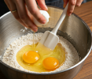
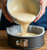

Comenzaremos a preparar la tarta desde la base, por ende comenzaremos rompiendo los huevos en un bol, lo batiremos bien, agregaremos azucar, harina, la nata liquida y el queso crema, seguiremos mezclando hasta obtener una pasta homogenea.

Vertido
Vertiremos la mezcla soble un molde desmontable con papek vegetal para horno, hornearemos a 200º durante 45 minutos.

Servido
Por ultimo debemos retirar la tarta del hotno, y dejarla reposar de entre 3-4 hasta que este bien atemperada, entonces la retiraremos del molde y la emplataremos para disfrutarla.